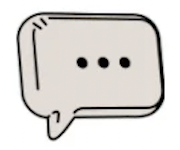

Branches
Abstract Branches lets you manage, version,
and document your designs in
one place.
Learn More →

Manage your account
Configure your accountt settings, such as your email,
profile details, and password.
Learn More →

Manage organizations, teams, and
projects
Use abstract organizations, teams,
and projects to organize your people and your
work.
Learn More →

Manage billing
Change subscriptions and payment
details.
Learn More →

Authenticate to Abstract
Set up and configures SSO, SCIM, and
Just-in-Time provisioning.
Learn More →

Abstract support
Get in touch with a human.
Learn More →